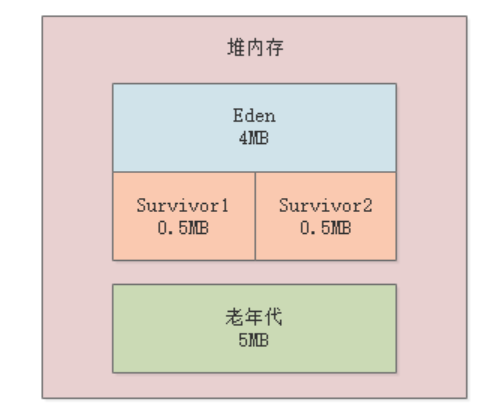
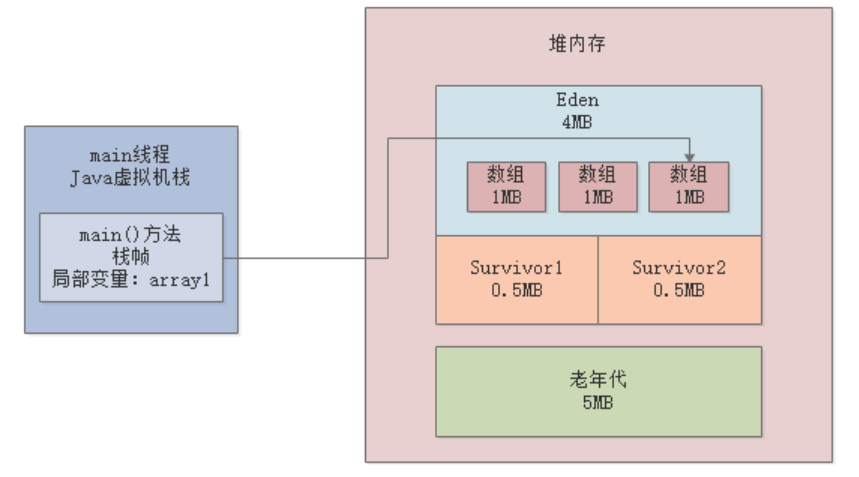
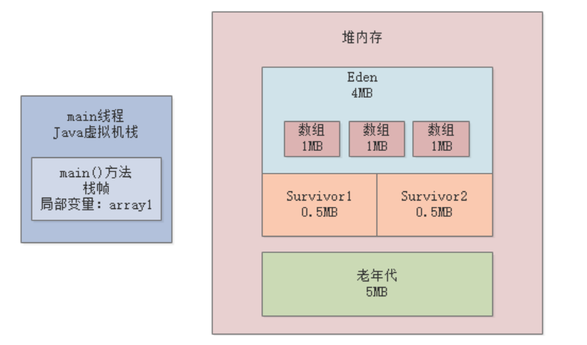
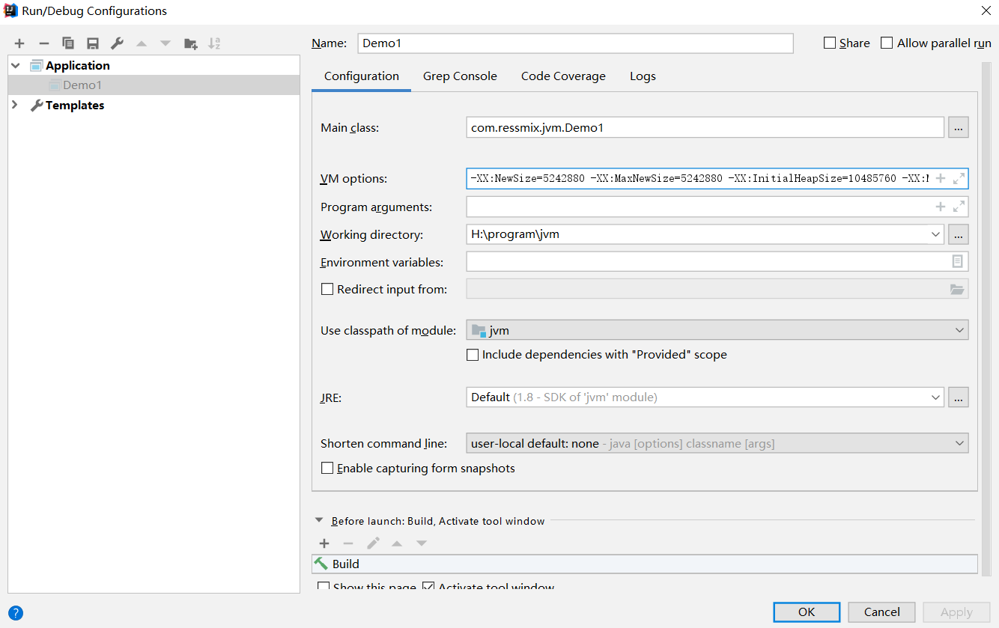
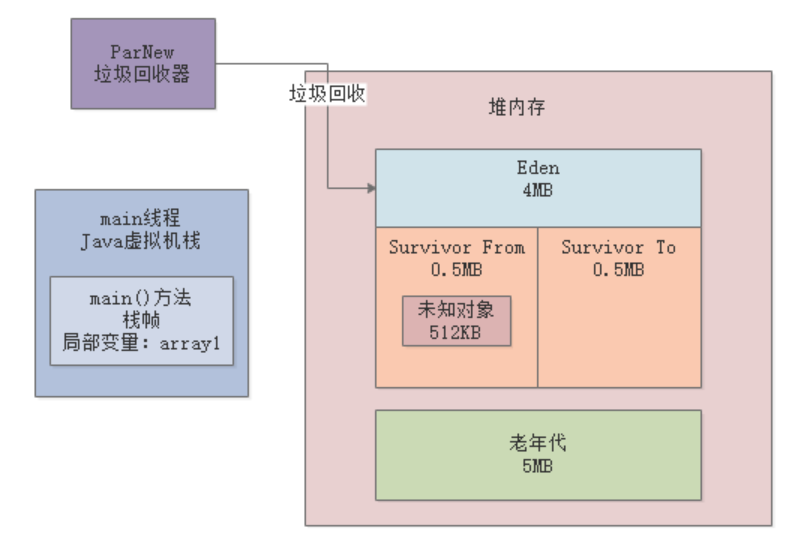

本章，我们将通过示例代码演示Young GC是如何发生的。同时，我们会讲解如何通过JVM参数去配置打印GC日日，然后通过GC日志分析JVM中的GC到底是如何运行的。
我们的示例程序基于JDK1.8，JVM参数如下：-XX:NewSize=5242880 -XX:MaxNewSize=5242880 -XX:InitialHeapSize=10485760 -XX:MaxHeapSize=10485760 -XX:SurvivorRatio=8 -XX:PretenureSizeThreshold=10485760 -XX:+UseParNewGC -XX:+UseConcMarkSweepGC
上述参数中：

我们需要在系统的JVM参数中加入GC日志的打印选型：
加入日志参数后，JVM的参数如下：
-XX:NewSize=5242880 -XX:MaxNewSize=5242880 -XX:InitialHeapSize=10485760 -XX:MaxHeapSize=10485760 -XX:SurvivorRatio=8 -XX:PretenureSizeThreshold=10485760 -XX:+UseParNewGC -XX:+UseConcMarkSweepGC -XX:+PrintGCDetails -XX:+PrintGCTimeStamps -Xloggc:gc.log
示例程序代码如下：
public class Demo1 {
public static void main(String[] args) {
byte[] array1 = new byte[1024 * 1024];
array1 = new byte[1024 * 1024];
array1 = new byte[1024 * 1024];
array1 = null;
byte[] array2 = new byte[2 * 1024 * 1024];
}
}
我们根据上述代码来分析下对象是如何在Eden区分配的。
首先，main方法里的第一行代码会为Eden区创建一个1MB的byte数组，第2-3行代码array1局部变量重新赋值引用：

第4行代码array1=null，这时之前的3个数组对象都失去了引用：

第5行代码byte[] array2 = new byte[2 * 1024 * 1024]，尝试创建一个2MB的对象放入Eden区，但是Eden区已经空间不足了，所以这时就会触发新生代的Young GC。
当使用IDE执行程序时，我们先要进行JVM参数配置，以IDEA为例，配置如下：

运行完成后，工程目录下会出现GC日志文件：gc.log，内容如下：
Java HotSpot(TM) 64-Bit Server VM (25.111-b14) for windows-amd64 JRE (1.8.0_111-b14), built on Sep 22 2016 19:24:05 by "java_re" with MS VC++ 10.0 (VS2010)
Memory: 4k page, physical 12470176k(6211924k free), swap 14370720k(6127712k free)
CommandLine flags: -XX:InitialHeapSize=10485760 -XX:MaxHeapSize=10485760 -XX:MaxNewSize=5242880 -XX:NewSize=5242880 -XX:OldPLABSize=16 -XX:PretenureSizeThreshold=10485760 -XX:+PrintGC -XX:+PrintGCDetails -XX:+PrintGCTimeStamps -XX:SurvivorRatio=8 -XX:+UseCompressedClassPointers -XX:+UseCompressedOops -XX:+UseConcMarkSweepGC -XX:-UseLargePagesIndividualAllocation -XX:+UseParNewGC
0.242: [GC (Allocation Failure) 0.242: [ParNew: 4094K->512K(4608K), 0.0018168 secs] 4094K->1696K(9728K), 0.0020491 secs] [Times: user=0.05 sys=0.02, real=0.00 secs]
Heap
par new generation total 4608K, used 3702K [0x00000000ff600000, 0x00000000ffb00000, 0x00000000ffb00000)
eden space 4096K, 77% used [0x00000000ff600000, 0x00000000ff91d978, 0x00000000ffa00000)
from space 512K, 100% used [0x00000000ffa80000, 0x00000000ffb00000, 0x00000000ffb00000)
to space 512K, 0% used [0x00000000ffa00000, 0x00000000ffa00000, 0x00000000ffa80000)
concurrent mark-sweep generation total 5120K, used 1184K [0x00000000ffb00000, 0x0000000100000000, 0x0000000100000000)
Metaspace used 3484K, capacity 4498K, committed 4864K, reserved 1056768K
class space used 387K, capacity 390K, committed 512K, reserved 1048576K
本节，我们来分析下上述的gc.log日志。
我们先来看下日志中的如下行，这是本次GC情况的概要说明：
0.242: [GC (Allocation Failure) 0.242: [ParNew: 4094K->512K(4608K), 0.0018168 secs] 4094K->1696K(9728K), 0.0020491 secs] [Times: user=0.05 sys=0.02, real=0.00 secs]
GC (Allocation Failure) ：说明了为啥发生GC，因为对象分配失败，也就是上述的Eden区空间不足了；
0.242：系统运行了0.242秒以后，发生了本次GC；
ParNew: 4094K->512K(4608K), 0.0018168 secs：使用ParNew进行新生代的GC，GC前新生代使用了4094K，GC完成后新生代使用了512K，4608K表示年轻代的总空间（Eden+1个Survivor），本次GC耗时0.0018168秒；
4094K->1696K(9728K), 0.0020491 secs：Java堆内存的总空间为8728K，GC前使用了4094K，GC后使用了1696K；
Times: user=0.05 sys=0.02, real=0.00 secs：本次GC消耗的时间，与元数据区有关，后续讲解。
根据GC日志可以看出，本轮Young GC有512K对象存活下来了，从Eden区转移到了Survivor区：

我们接着看下面的GC日志，这是JVM退出时当前Java堆内存的使用情况：
Heap
par new generation total 4608K, used 3702K [0x00000000ff600000, 0x00000000ffb00000, 0x00000000ffb00000)
eden space 4096K, 77% used [0x00000000ff600000, 0x00000000ff91d978, 0x00000000ffa00000)
from space 512K, 100% used [0x00000000ffa80000, 0x00000000ffb00000, 0x00000000ffb00000)
to space 512K, 0% used [0x00000000ffa00000, 0x00000000ffa00000, 0x00000000ffa80000)
par new generation total 4608K, used 3702K：ParNew负责的新生代总共有4608K内存，目前使用了3702K；
eden space 4096K, 77% used：Eden总共使用了4096K
from space 512K, 100% used： From Survivor区使用了100%（存放转移过来的未知存活对象）
to space 512K, 0% used：To Survivor区未使用
我们接着看：
concurrent mark-sweep generation total 5120K, used 1184K [0x00000000ffb00000, 0x0000000100000000, 0x0000000100000000)
Metaspace used 3484K, capacity 4498K, committed 4864K, reserved 1056768K
class space used 387K, capacity 390K, committed 512K, reserved 1048576K
concurrent mark-sweep generation total 5120K, used 1184K：使用CMS管理的老年代总空间为5210K，已使用1184K
Metaspace used 3484K, capacity 4498K, committed 4864K, reserved 1056768K：元数据区的空间信息
class space used 387K, capacity 390K, committed 512K, reserved 1048576K：Class空间信息
JDK1.8开始，取消了方法区，取而代之的是Metaspace。Metaspace直接使用本地内存。默认情况下，其大小会根据使用情况动态调整，也可以使用
-XX:MaxMetaspaceSize来控制最大内存。